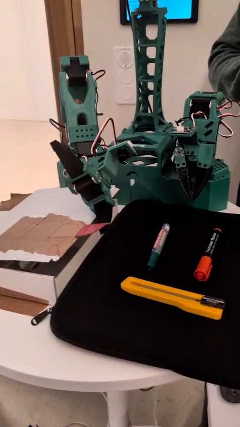
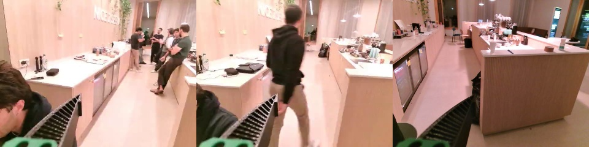
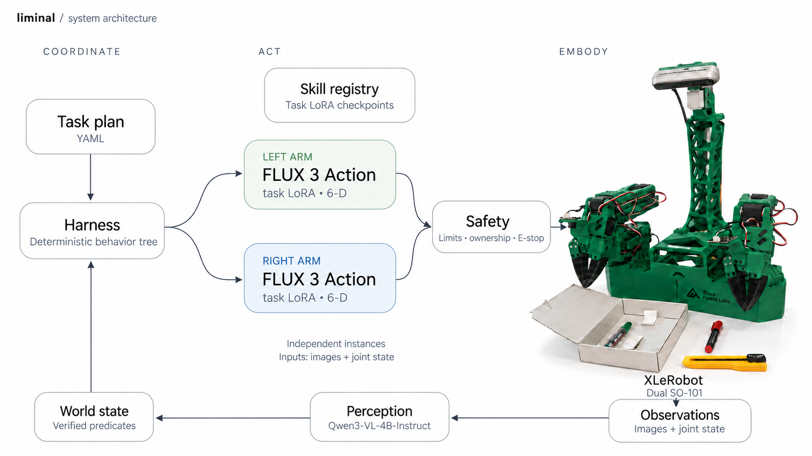
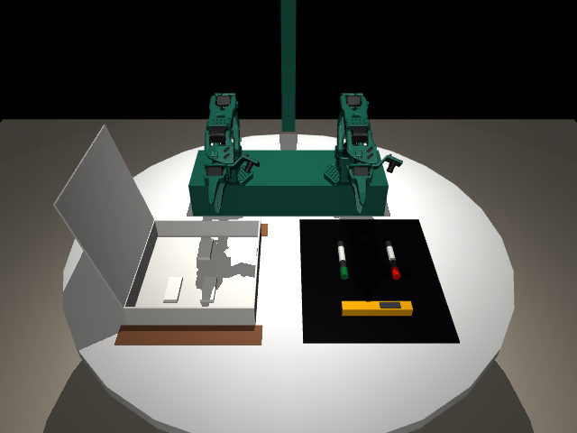
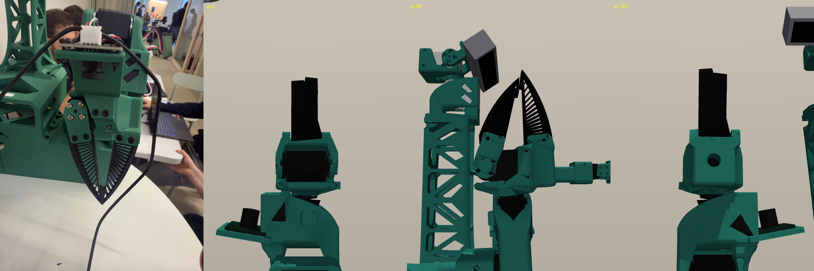

Measured-joint mirroring
Pair the lab with the local companion to mirror measured joints in MuJoCo.
ERH Physical AI Hackathon · 17–18 October 2026
Task LoRAs control each arm. A behavior tree coordinates the task.
Liminal runs on Haller, a dual SO-101 rig, with camera feedback and a MuJoCo joint mirror.
Two SO-101 arms / FLUX 3 Action + task LoRA / MuJoCo

The idea
The placement arm needs the lid to stay open. Losing support must stop the insertion.
One arm opens and holds the lid while the other places an object inside.
The behavior tree schedules skills, monitors support and waits for camera-based verification before advancing.
Full learned dual-arm execution is still unverified.
Real robot
Five recorded FLUX LoRA runs. Head and wrist cameras are shown side by side.
RAW 5k adapter · layout C · real head and wrist camera recordings.

Training and runtime wrist views after a small station offset. This records a setup mismatch; its effect on success was not measured.
The architecture
Each arm has its own six-channel FLUX instance, observation history and task checkpoint. Select a component below.
The tree schedules skills, checks support conditions and waits for independent verification.

System diagram from the README; the hardware panel is an adapted photograph.
Task dependencies
Move the slider through the task. Toggle loss of support to see placement cancel.
The helper arm changes the scene. The placement skill waits for a verified open-lid condition.
Runtime illustration, not a physical trial. The showcase sequences a green pen, red pen and cutter.
Demonstrations
Inspect a scripted teacher, compare policy checkpoints and view predicted camera frames.
Scripted training demonstration: left arm parked, lid fixed open.
Red marker, seed 901001. These videos belong to the separate tabletop-twin experiment.
Final gripper-to-marker distance: 20.6 cm
Final gripper-to-marker distance: 2.2 cm
Both checkpoints completed 0/20 placements. The shorter distance in this scene does not establish a successful grasp.
On held-out red-pen take 101, the RAW-5k LoRA’s imagined video appears beside recorded camera frames. A predicted future is not a measured outcome.
Results
Recorded results, separated by task and experiment.
Five identical held-out seeds for each model. Lift threshold: 3.5 cm.
Raw LoRA: 2/5 lifts. Zero-shot and EMA: 0/5. All models: 0/5 placements.
The media index reports 3/5 and 2/3 successful attempts in two RAW-5k sessions. Watch the selected runs ↗
Two trials reached their duration. Others stopped on torque, travel-limit or tracking checks.
These older trials have no task-success labels. They are separate from the red-pen sessions above.
Scripted demonstrations vary object pose, box layout, lighting and cameras.
Separate dataset from the five-seed red-block experiment.
Sources: current main validation records and media index · Download the public result summary ↗
The digital twin
Drag to compare the real setup with the estimated scene. The views are not registered.

Pair the lab with the local companion to mirror measured joints in MuJoCo.
Scene dimensions and camera registration need calibration. Live objects and contact forces are not tracked.

Haller uses compliant fingers; the simulated jaws are rigid.
Evidence & limits
Code, recordings and remaining validation.
The runtime is implemented. Six object-order permutations pass symbolic checks using synthetic checkpoints and deterministic feedback.
Qwen inspects camera views and updates timestamped scene predicates. Physical task transitions still need a labeled perception evaluation.
RAW-5k has recorded real inserts. A separate 10k adapter passed a blank-image loading check with a finite 42×6 output. Other showcase skill bundles remain unstaged.
Single-arm red-pen inserts are recorded. Full learned dual-arm execution and a calibrated object/contact twin remain unverified.
This page is based on main revision 07e50d0, reviewed
on 18 October 2026. Public results are an explicit aggregate export
of recorded validation files, not a newly reproduced benchmark.
Hardware/controller origins, serial identifiers, credentials and raw
telemetry are excluded.
Result counts and source-file provenance · Read the evidence notes and local bridge setup
Layout references: DexMimic and Nerfies. Liminal's copy, interactions and layouts are original. Hardware CAD is from TheRobotStudio; Three.js and self-hosted fonts retain their licenses.